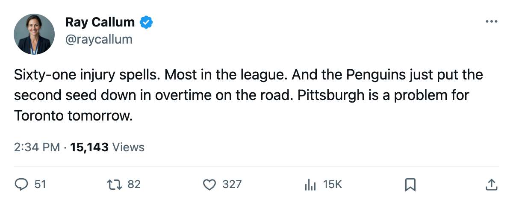

Fourth Line No More: 61 injuries could not stop Pittsburgh from taking down the 2nd seed
The 7th-seeded Penguins finished the season with the most injury spells and the most days lost in the league. They just eliminated New Jersey.
 Ray CallumSenior correspondent · Home Ice Network
Ray CallumSenior correspondent · Home Ice Network
 Pittsburgh Penguins won its series against
Pittsburgh Penguins won its series against  New Jersey Devils 4-2 on a 3-2 overtime goal in Newark on April 19. The seventh seed, 24-34-11, outlasted the second seed through six games, five of which were decided by one goal.
New Jersey Devils 4-2 on a 3-2 overtime goal in Newark on April 19. The seventh seed, 24-34-11, outlasted the second seed through six games, five of which were decided by one goal.
The most injured club still standing
Pittsburgh logged 61 injury spells and 671 days lost this season, the highest totals of any club in the league. Eric Meloche75 went down with a foot injury.  Martin Straka83 missed time with a wrist problem. Mike Eastwood and
Martin Straka83 missed time with a wrist problem. Mike Eastwood and  Kris Beech70 each carried separate spells. Goalie
Kris Beech70 each carried separate spells. Goalie  Johan Hedberg86 was shelved eight separate times by the league's count.
Johan Hedberg86 was shelved eight separate times by the league's count.
The coaching staff kept reorganizing. This week's lineup changes moved Eastwood up to the second line center slot, shifted Rico Fata70 from right wing to center, promoted Brian Holzinger73 to the third-line center role, and scratched  Milan Kraft64 entirely.
Milan Kraft64 entirely.  Dick Tarnstrom77 added a healthy scratch slot to get rest.
Dick Tarnstrom77 added a healthy scratch slot to get rest.
The men who carried it
 Mario Lemieux85 finished the series with 2+6=8 in 6. Meloche, despite his own spell on the ledger, posted 4+2=6 in 6. Defenseman
Mario Lemieux85 finished the series with 2+6=8 in 6. Meloche, despite his own spell on the ledger, posted 4+2=6 in 6. Defenseman  Richard Lintner74 managed 1+3=4 and Martin Straka the same.
Richard Lintner74 managed 1+3=4 and Martin Straka the same.
In net, Hedberg went 3-2, 2.00 GAA, .907. Caron entered for Game 6, took the overtime winner in 1-0 fashion at 1.00 GAA and .952.
Now Toronto
The Penguins face the 1-seed  Toronto Maple Leafs on Friday. Toronto went 4-0-0 against Pittsburgh in the regular season, outscoring them 20-9. The Maple Leafs carry the league's top point total at 133, and
Toronto Maple Leafs on Friday. Toronto went 4-0-0 against Pittsburgh in the regular season, outscoring them 20-9. The Maple Leafs carry the league's top point total at 133, and  Roberto Luongo95 finished Round 1 with a .963 save percentage.
Roberto Luongo95 finished Round 1 with a .963 save percentage.
Pittsburgh got to this point with 671 days already on the injury ledger.
